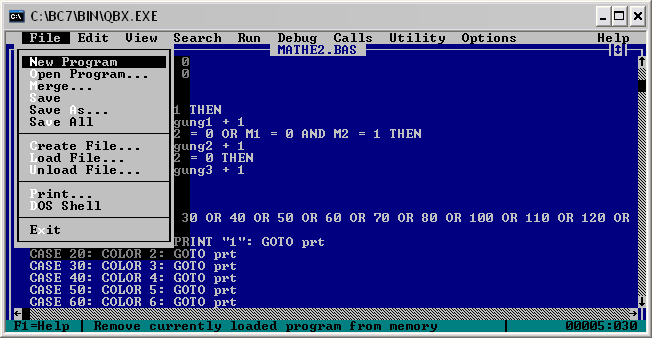

Chrome开发者工具的小技巧
Chrome的开发者工具是个很强大的东西，相信程序员们都不会陌生，不过有些小功能可能并不为大众所知，所以，写下这篇文章罗列一下可能你所不知道的功能，有的功能可能会比较实用，有的则不一定，也欢迎大家补充交流。
话不多话，我们开始。
代码格式化
有很多css/js的代码都会被 minify 掉，你可以点击代码窗口左下角的那个 { } 标签，chrome会帮你给格式化掉。

 (88 人打了分，平均分： 4.41 )
(88 人打了分，平均分： 4.41 )| Refresh | This website coolshell.cn/tag/html is currently offline. Cloudflare's Always Online™ shows a snapshot of this web page from the Internet Archive's Wayback Machine. To check for the live version, click Refresh. |
Chrome的开发者工具是个很强大的东西，相信程序员们都不会陌生，不过有些小功能可能并不为大众所知，所以，写下这篇文章罗列一下可能你所不知道的功能，有的功能可能会比较实用，有的则不一定，也欢迎大家补充交流。
话不多话，我们开始。
有很多css/js的代码都会被 minify 掉，你可以点击代码窗口左下角的那个 { } 标签，chrome会帮你给格式化掉。
(88 人打了分，平均分： 4.41 )
HTML5 是 HTML 语言最受欢迎的版本之一，它支持音频和视频、离线存储、移动端、和标签属性等等。还提供了<article>, <section>, <header>这样的标签来帮助开发者更好地组织页面内容。然而 HTML5 规范仍然没有最后定稿，并且它并不是一个真正意义上的语义标记语言。
你有没有曾经希望能在 HTML 中使用自定义标签？比如：使用<logo>来显示你的网站logo，还有使用<toolbar>来显示工具栏等等。我们经常使用<div id=”container”>和<div id=”wrapper”>来组织页面，在 HTML6 里我们希望可以直接使用象<container>和<wrapper>这样的自定义标签。
和 XML 一样，HTML6 应该支持 namespace（命名空间），如：xmlns:xhtml=”http://www.w3.org/1999/xhtml”
HTML6 代码样例：
 (42 人打了分，平均分： 3.48 )
(42 人打了分，平均分： 3.48 )看到这个标题大家一定会想到这篇神文《How Browsers Work》，这篇文章把浏览器的很多细节讲得很细，而且也被翻译成了中文。为什么我还想写一篇呢？因为两个原因，
1）这篇文章太长了，阅读成本太大，不能一口气读完。
2）花了大力气读了这篇文章后可以了解很多，但似乎对工作没什么帮助。
所以，我准备写下这篇文章来解决上述两个问题。希望你能在上班途中，或是坐马桶时就能读完，并能从中学会一些能用在工作上的东西。
废话少说，先来看个图：

从上面这个图中，我们可以看到那么几个事：
(70 人打了分，平均分： 4.39 )【感谢 Neo 投递本文 – 微博帐号：_锟_ 】
前言： 布局是WEB开发一个重要的课题，进入XHTML/CSS后，使用TABLE布局的方式逐渐淡出，CSS布局以众多优点成为主流，本文将介绍40个基于CSS的web布局的资源和教程。文章的出处在http://www.noupe.com/css/css-layouts-40-tutorials-tips-demos-and-best-practices.html。文中的不少的例子在一本经典的CSS书籍《CCS: The Missing Manual, 2nd Edition》中都可以找到，据我所知，第二版在中国没有翻译出版。你可以从这里下载英文版（不过需要注册个用户名）
正文
基于CSS的布局能提供更灵活布局方式和更强的用户视觉体验。一些重要技巧和关键点可以帮助初学者理解CSS布局的基础和本质。这也是本文成文的原因 ——找到那些完美的布局，完全灵活的，等高栏和工作完美的布局。
因此下面这个列表就是我们整理了网络上关于基于CSS布局的一些技巧，教程和最佳实践的列表。
当然你也可能对下面这些和CSS相关的主题有兴趣：
The 7 CSS Hacks that we should use
Using CSS to Do Anything: 50+ Creative Examples and Tutorials
Using CSS to Fix Anything: 20+ Common Bugs and Fixes
(18 人打了分，平均分： 3.83 )下面是我这段时间来收集的一些有意思的东西。本站这样的文章还很多，如这个，这个，这个。
Javascript Garden，这是学习Javascript最好的网站了。http://bonsaiden.github.com/JavaScript-Garden，这个文档由两具StackOverflow的人写成, Ivo Wetzel(Writing) 和 Zhang Yi Jiang (Design)，表示敬意。
想看看Web开发有哪些技术吗？你得看看这个网站：http://stackparts.com/，他对目前几乎所有Web上用得到的技术都分了个类。下面是个抓图。

Mozilla的安全编程规范 https://wiki.mozilla.org/WebAppSec/Secure_Coding_Guidelines Downloads associated to Software development
PHP,Perl, Ruby, Python语法比较http://hyperpolyglot.org/scripting?utm_source
(13 人打了分，平均分： 3.46 )收家的时候发现了一张VC++6.0的光盘，实然引发了我的怀旧情结。于是在微博上感叹了一下，看到一些朋友的回应，还有朋友提到了Turbo C 2.0，于是更回放大了我的怀旧情绪，让我回想了很多N年前伴我走过编程之路的软件。现在看下来，有些感叹，又有些可笑。感叹的是技术发展的变迁，可笑的是当时的一些想法。（Unix/Linux是在大四和毕业的时候接触的，虽然这是我的强项，但是这下面的编程这么多年来没什么变化，所以就不提了）注：图片较多，请稍等。
还记得第一次接触编程是在高中的时候，用中华学习机学Basic程序，后来到了大学，虽然学校的课程没有教Basic语言，但是DOS下有一个叫Quick Baisc的东西让我把高中时的知识又捡了回了。

大学里学的第一门语言是Pascal，所以，用的编程软件也就是Turbo Pascal，还记编译起来巨快无比，尤其是那个只有软盘和640K的基本内存的时代。
(34 人打了分，平均分： 4.53 )下面是近期收录的一些文章和资源，希望对你有用。

 (22 人打了分，平均分： 4.27 )
(22 人打了分，平均分： 4.27 )文章来源：Best “must know” open sources to build the new Web。个人感觉这个收集贴收集成相当的全。

(35 人打了分，平均分： 4.31 )又到了介绍各种杂项的时候了，正如以前的这三篇（这篇，这篇，和这篇）文章一样，本篇文章也给你介绍一些最近出现的一些有趣的东西。希望你能喜欢。
先说找工作吧，电影《该页无法显示》里的那个facebook主页上的招聘网页上是列了一堆问题，你可以去看看，你可以使用c/c++，Erlang，Haskell，Java，Perl，Python，PHP，Ruby来解题，不过只接受Unix/Linux下的版本， 不接受Windows的版本。无独有偶，DropBox的招聘网页上也是些算法题，大家可以过去看看，不过需要翻墙。（现在，对于美国互联网企业来说，如果你没有被C2C，说明你根本不存在，如果你没有被墙，说明你还不算成功）
接下来给大家介绍一些文档和教程吧，都是英文的。
(19 人打了分，平均分： 4.16 )无论你是多牛的程序员，你都无法记住所有的东西。而很多时候，查找某些知识又比较费事。所以，网上有很多Cheat Sheets，翻译成小抄也好 ，速查卡也好，总之就是帮你节省 时间的。之前给大家介绍过Web设计的速查卡、25个jQuery的编程小抄，还有程序员小抄大全，今天转一篇开发人员的速查卡，源文在这里。下面的文章我就不翻译了。

(13 人打了分，平均分： 4.00 )